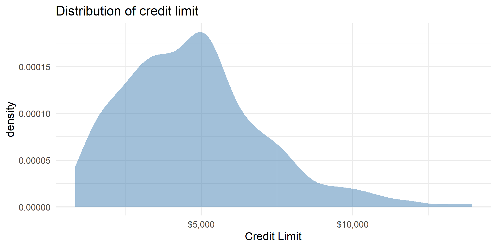

# load packages
library(tidyverse)
library(broom)
library(mosaic)
library(openintro)
library(patchwork)
library(knitr)
library(kableExtra)
# set default theme and larger font size for ggplot2
ggplot2::theme_set(ggplot2::theme_minimal(base_size = 16))Multiple linear regression (MLR)
Computational setup
Considering multiple variables
Data: Peer-to-peer lender
Today’s data is a sample of 50 loans made through a peer-to-peer lending club. The data is in the loan50 data frame in the openintro R package.
| annual_income | debt_to_income | verified_income | interest_rate |
|---|---|---|---|
| 59000 | 0.5575254 | Not Verified | 10.90 |
| 60000 | 1.3056833 | Not Verified | 9.92 |
| 75000 | 1.0562800 | Verified | 26.30 |
| 75000 | 0.5743467 | Not Verified | 9.92 |
| 254000 | 0.2381496 | Not Verified | 9.43 |
| 67000 | 1.0770448 | Source Verified | 9.92 |
| 28800 | 0.0997222 | Source Verified | 17.09 |
| 80000 | 0.3509125 | Not Verified | 6.08 |
| 34000 | 0.6975000 | Not Verified | 7.97 |
| 80000 | 0.1668542 | Source Verified | 12.62 |
Variables
Predictors:
annual_income: Annual incomedebt_to_income: Debt-to-income ratio, i.e. the percentage of a borrower’s total debt divided by their total incomeverified_income: Whether borrower’s income source and amount have been verified (Not Verified,Source Verified,Verified)
Outcome: interest_rate: Interest rate for the loan
Outcome: interest_rate

| min | Q1 | median | Q3 | max | mean | sd | n | missing | |
|---|---|---|---|---|---|---|---|---|---|
| 5.31 | 7.96 | 9.93 | 13.715 | 26.3 | 11.5672 | 5.052115 | 50 | 0 |
Predictors
Data manipulation 1: Rescale income
loan50 <- loan50 |>
mutate(annual_income_k = annual_income / 1000)
gf_histogram(~annual_income_k, data = loan50, binwidth = 20) |>
gf_labs(title = "Annual income (in $1000s)",
x = "")Outcome vs. predictors
Single vs. multiple predictors
So far we’ve used a single predictor variable to understand variation in a quantitative response variable
. . .
Now we want to use multiple predictor variables to understand variation in a quantitative response variable
Multiple linear regression
Multiple linear regression (MLR)
Based on the analysis goals, we will use a multiple linear regression model of the following form
\[ \begin{aligned}\hat{\text{interest_rate}} ~ = \hat{\beta}_0 & + \hat{\beta}_1 \text{debt_to_income} \\ & + \hat{\beta}_2 \text{verified_income} \\ &+ \hat{\beta}_3 \text{annual_income_k} \end{aligned} \]
Similar to simple linear regression, this model assumes that at each combination of the predictor variables, the values interest_rate follow a Normal distribution.
Multiple linear regression
Recall: The simple linear regression model assumes
\[ Y|X\sim N(\beta_0 + \beta_1 X, \sigma_{\epsilon}^2) \]
. . .
Similarly: The multiple linear regression model assumes
\[ Y|X_1, X_2, \ldots, X_p \sim N(\beta_0 + \beta_1 X_1 + \beta_2 X_2 + \dots + \beta_p X_p, \sigma_{\epsilon}^2) \]
Multiple linear regression
At any combination of the predictors, the mean value of the response \(Y\), is
\[ \mu_{Y|X_1, \ldots, X_p} = \beta_0 + \beta_1 X_{1} + \beta_2 X_2 + \dots + \beta_p X_p \]
. . .
Using multiple linear regression, we can estimate the mean response for any combination of predictors
\[ \hat{Y} = \hat{\beta}_0 + \hat{\beta}_1 X_{1} + \hat{\beta}_2 X_2 + \dots + \hat{\beta}_p X_{p} \]
Model fit
int_fit <- lm(interest_rate ~ debt_to_income + verified_income + annual_income_k,
data = loan50)
tidy(int_fit) |>
kable(digits = 3)| term | estimate | std.error | statistic | p.value |
|---|---|---|---|---|
| (Intercept) | 10.726 | 1.507 | 7.116 | 0.000 |
| debt_to_income | 0.671 | 0.676 | 0.993 | 0.326 |
| verified_incomeSource Verified | 2.211 | 1.399 | 1.581 | 0.121 |
| verified_incomeVerified | 6.880 | 1.801 | 3.820 | 0.000 |
| annual_income_k | -0.021 | 0.011 | -1.804 | 0.078 |
Model equation
\[ \begin{align}\hat{\text{interest_rate}} = 10.726 &+0.671 \times \text{debt_to_income}\\ &+ 2.211 \times \text{source_verified}\\ &+ 6.880 \times \text{verified}\\ & -0.021 \times \text{annual_income_k} \end{align} \]
Note
We will talk about why there are two terms in the model for verified_income shortly!
Interpreting \(\hat{\beta}_j\)
- The estimated coefficient \(\hat{\beta}_j\) is the expected change in the mean of \(y\) when \(x_j\) increases by one unit, holding the values of all other predictor variables constant.
. . .
- Example: The estimated coefficient for
debt_to_incomeis 0.671. This means for each point in an borrower’s debt to income ratio, the interest rate on the loan is expected to be greater by 0.671%, holding annual income and income verification constant.
Prediction
What is the predicted interest rate for an borrower with an debt-to-income ratio of 0.558, whose income is not verified, and who has an annual income of $59,000?
10.726 + 0.671 * 0.558 + 2.211 * 0 + 6.880 * 0 - 0.021 * 59[1] 9.861418. . .
The predicted interest rate for an borrower with with an debt-to-income ratio of 0.558, whose income is not verified, and who has an annual income of $59,000 is 9.86%.
Prediction, revisited
Just like with simple linear regression, we can use the predict() function in R to calculate the appropriate intervals for our predicted values:
new_borrower <- tibble(
debt_to_income = 0.558,
verified_income = "Not Verified",
annual_income_k = 59
)
predict(int_fit, new_borrower) 1
9.890888
Note
Difference in predicted value due to rounding the coefficients on the previous slide.
Confidence interval for \(\hat{\mu}_y\)
Calculate a 90% confidence interval for the estimated mean interest rate for borrowers with an debt-to-income ratio of 0.558, whose income is not verified, and who has an annual income of $59,000.
predict(int_fit, new_borrower, interval = "confidence", level = 0.90) fit lwr upr
1 9.890888 8.159246 11.62253Prediction interval for \(\hat{y}\)
Calculate a 90% confidence interval for the predicted interest rate for an individual applicant with an debt-to-income ratio of 0.558, whose income is not verified, and who has an annual income of $59,000.
predict(int_fit, new_borrower, interval = "prediction", level = 0.90) fit lwr upr
1 9.890888 2.180521 17.60126Cautions
- Do not extrapolate! Because there are multiple predictor variables, there is the potential to extrapolate in many directions
- The multiple regression model only shows association, not causality
- To show causality, you must have a carefully designed experiment or carefully account for confounding variables in an observational study
Types of predictors
Interpreting results
| term | estimate | std.error | statistic | p.value | conf.low | conf.high |
|---|---|---|---|---|---|---|
| (Intercept) | 10.726 | 1.507 | 7.116 | 0.000 | 7.690 | 13.762 |
| debt_to_income | 0.671 | 0.676 | 0.993 | 0.326 | -0.690 | 2.033 |
| verified_incomeSource Verified | 2.211 | 1.399 | 1.581 | 0.121 | -0.606 | 5.028 |
| verified_incomeVerified | 6.880 | 1.801 | 3.820 | 0.000 | 3.253 | 10.508 |
| annual_income_k | -0.021 | 0.011 | -1.804 | 0.078 | -0.043 | 0.002 |
. . .
Describe the subset of borrowers who are expected to get an interest rate of 10.726% based on our model. Is this interpretation meaningful? Why or why not?
Indicator variables
Indicator variables
Suppose there is a categorical variable with \(K\) categories (levels)
We can make \(K\) indicator variables - one indicator for each category
An indicator variable takes values 1 or 0
- 1 if the observation belongs to that category
- 0 if the observation does not belong to that category
Data manipulation 2: Create indicator variables for verified_income
loan50 <- loan50 |>
mutate(
not_verified = if_else(verified_income == "Not Verified", 1, 0),
source_verified = if_else(verified_income == "Source Verified", 1, 0),
verified = if_else(verified_income == "Verified", 1, 0)
). . .
| verified_income | not_verified | source_verified | verified |
|---|---|---|---|
| Not Verified | 1 | 0 | 0 |
| Verified | 0 | 0 | 1 |
| Source Verified | 0 | 1 | 0 |
Indicators in the model
- We will use \(K-1\) of the indicator variables in the model.
- The reference level is the category that doesn’t have a term in the model.
- The coefficients of the indicator variables in the model are interpreted as the expected change in the response compared to the baseline, holding all other variables constant.
- This approach is also called dummy coding.
lmwill do this for you.
. . .
loan50 |>
select(verified_income, source_verified, verified) |>
slice(1, 3, 6) |>
kable()| verified_income | source_verified | verified |
|---|---|---|
| Not Verified | 0 | 0 |
| Verified | 0 | 1 |
| Source Verified | 1 | 0 |
Interpreting verified_income
| term | estimate | std.error | statistic | p.value | conf.low | conf.high |
|---|---|---|---|---|---|---|
| (Intercept) | 10.726 | 1.507 | 7.116 | 0.000 | 7.690 | 13.762 |
| debt_to_income | 0.671 | 0.676 | 0.993 | 0.326 | -0.690 | 2.033 |
| verified_incomeSource Verified | 2.211 | 1.399 | 1.581 | 0.121 | -0.606 | 5.028 |
| verified_incomeVerified | 6.880 | 1.801 | 3.820 | 0.000 | 3.253 | 10.508 |
| annual_income_k | -0.021 | 0.011 | -1.804 | 0.078 | -0.043 | 0.002 |
. . .
- The reference level is
Not verified. - People with source verified income are expected to take a loan with an interest rate that is 2.211% higher, on average, than the rate on loans to those whose income is not verified, holding all else constant.
. . .
Interpret the coefficient of Verified in the context of the data.
Interaction terms
Interaction terms
- Sometimes the relationship between a predictor variable and the response depends on the value of another predictor variable.
- This is an interaction effect.
- To account for this, we can include interaction terms in the model.
Interest rate vs. annual income
The lines are not parallel indicating there is an interaction effect. The slope of annual income differs based on the income verification.
Interaction terms
Interaction terms
- Sometimes the relationship between a predictor variable and the response depends on the value of another predictor variable.
- This is an interaction effect.
- To account for this, we can include interaction terms in the model.
Interest rate vs. annual income
The lines are not parallel indicating there is an interaction effect. The slope of annual income differs based on the income verification.
Interaction term in model
int_int_fit <- lm(interest_rate ~ debt_to_income + verified_income + annual_income_k + verified_income * annual_income_k,
data = loan50)| term | estimate | std.error | statistic | p.value |
|---|---|---|---|---|
| (Intercept) | 9.560 | 2.034 | 4.700 | 0.000 |
| debt_to_income | 0.691 | 0.685 | 1.009 | 0.319 |
| verified_incomeSource Verified | 3.577 | 2.539 | 1.409 | 0.166 |
| verified_incomeVerified | 9.923 | 3.654 | 2.716 | 0.009 |
| annual_income_k | -0.007 | 0.020 | -0.341 | 0.735 |
| verified_incomeSource Verified:annual_income_k | -0.016 | 0.026 | -0.643 | 0.523 |
| verified_incomeVerified:annual_income_k | -0.032 | 0.033 | -0.979 | 0.333 |
Interpreting interaction terms
- What the interaction means: The effect of annual income on the interest rate differs by -0.016 when the income is source verified compared to when it is not verified, holding all else constant.
- Interpreting
annual_incomefor source verified: If the income is source verified, we expect the interest rate to decrease by 0.023% (-0.007 + -0.016) for each additional thousand dollars in annual income, holding all else constant.
Data manipulation 3: Create interaction variables
Defining the interaction variable in the model formula as verified_income * annual_income_k_cent is an implicit data manipulation step as well (R will do this for you)
Rows: 50
Columns: 9
$ `(Intercept)` <dbl> 1, 1, 1, 1, 1, 1, 1, …
$ debt_to_income <dbl> 0.55752542, 1.3056833…
$ annual_income_k <dbl> 59.0, 60.0, 75.0, 75.…
$ `verified_incomeNot Verified` <dbl> 1, 1, 0, 1, 1, 0, 0, …
$ `verified_incomeSource Verified` <dbl> 0, 0, 0, 0, 0, 1, 1, …
$ verified_incomeVerified <dbl> 0, 0, 1, 0, 0, 0, 0, …
$ `annual_income_k:verified_incomeNot Verified` <dbl> 59, 60, 0, 75, 254, 0…
$ `annual_income_k:verified_incomeSource Verified` <dbl> 0.0, 0.0, 0.0, 0.0, 0…
$ `annual_income_k:verified_incomeVerified` <dbl> 0, 0, 75, 0, 0, 0, 0,…Wrap up
Recap
Introduced multiple linear regression
Interpreted coefficients in the multiple linear regression model
Calculated predictions and associated intervals for multiple linear regression models
Mean-centered quantitative predictors
Used indicator variables for categorical predictors
Used interaction terms
Looking backward
Data manipulation, with dplyr (from tidyverse):
loan50 |>
select(interest_rate, annual_income, debt_to_income, verified_income) |>
mutate(
# 1. rescale income
annual_income_th = annual_income / 1000,
# 2. mean-center quantitative predictors
debt_inc_cent = debt_to_income - mean(debt_to_income),
annual_income_th_cent = annual_income_th - mean(annual_income_th),
# 3. create dummy variables for verified_income
source_verified = if_else(verified_income == "Source Verified", 1, 0),
verified = if_else(verified_income == "Verified", 1, 0),
# 4. create interaction variables
`annual_income_th_cent:verified_incomeSource Verified` = annual_income_th_cent * source_verified,
`annual_income_th_cent:verified_incomeVerified` = annual_income_th_cent * verified
)